2024年北京市中考物理试题 原卷解析
2024年北京市初中学业水平考试
物理试卷
考生须知
1．本试卷共8页，共两部分，共26题，满分70分。考试时间70分钟。
2．在试卷和草稿纸上准确填写姓名、准考证号、考场号和座位号。
3．试题答案一律填涂或书写在答题卡上，在试卷上作答无效。
4．在答题卡上，选择题、作图题用2B铅笔作答，其他试题用黑色字迹签字笔作答。
5．考试结束，将本试卷、答题卡和草稿纸一并交回。
第一部分
一、单项选择题（下列每题均有四个选项，其中只有一个选项符合题意。共24分，每题2分）
1. 下列物品中，通常情况下属于导体的是（ ）
A. 陶瓷杯B. 橡皮C. 钢尺D. 塑料水瓶
【答案】C
【解析】
【详解】A．陶瓷杯不能导电，不是导体，是绝缘体，故A不符合题意；
B．橡皮不能够导电，不是导体，是绝缘体，故B不符合题意；
C．钢尺能够导电，是导体，故C符合题意；
D．塑料水瓶不能导电，不是导体，是绝缘体，故D不符合题意。
故选C。
2. 下图所示为自行车部件或使用中的实例，为了减小摩擦的是（ ）
A.
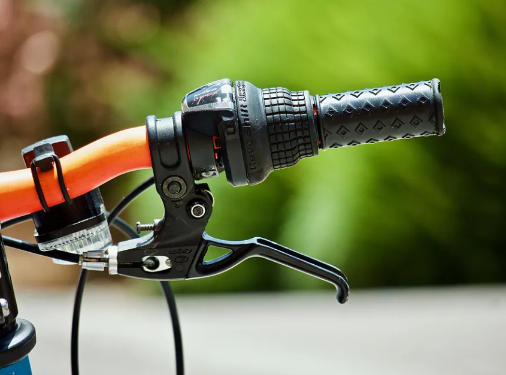
车把上套了有花纹的橡胶套B.
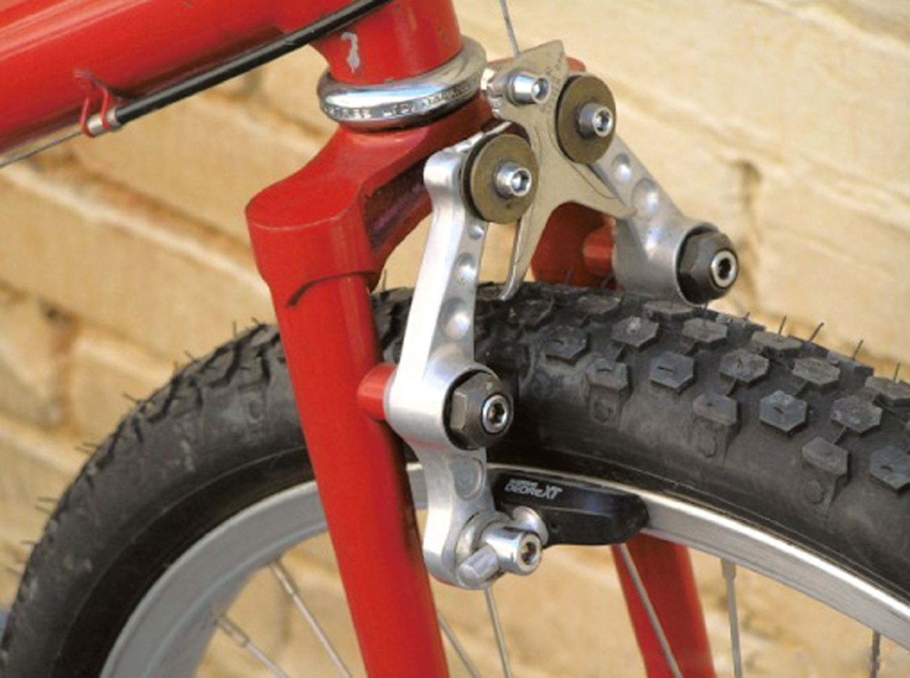
遇到紧急情况时用力捏刹车C.
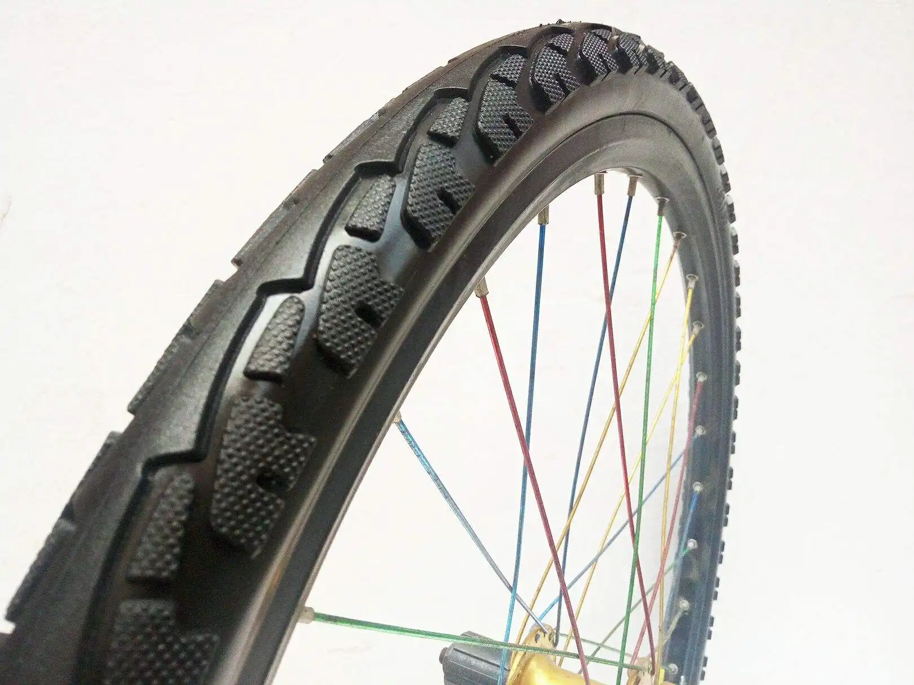
自行车轮胎上刻有花纹D.
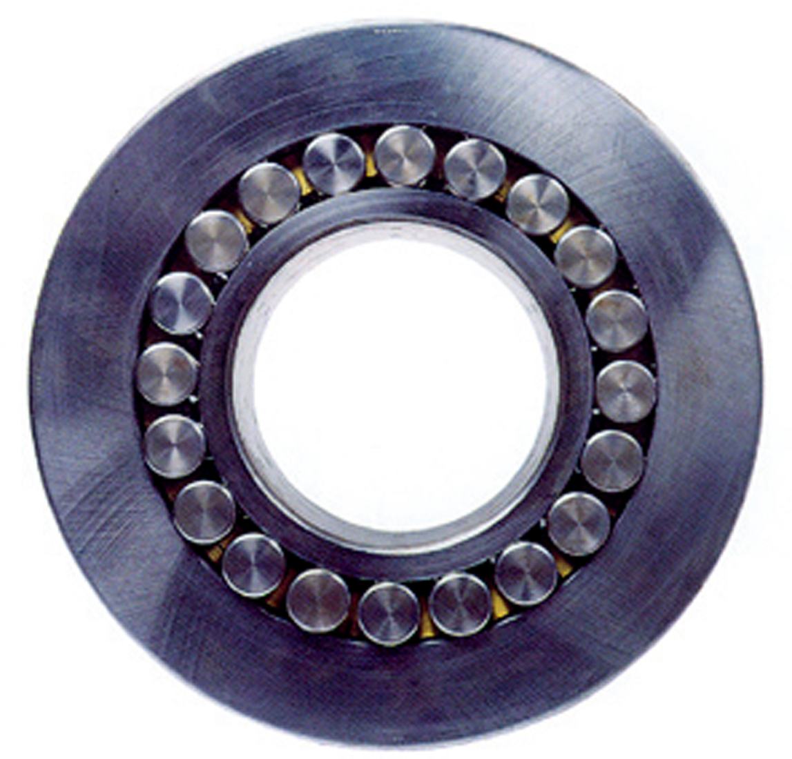
轴承中装有滚珠【答案】D
【解析】
【详解】A．车把上套了有花纹的橡胶套，是利用增大接触面的粗糙程度来增大摩擦，故A不符合题意；
B．遇到紧急情况时用力捏刹车，是利用增大压力来增大摩擦，故B不符合题意；
C．自行车轮胎上刻有花纹，是利用增大接触面的粗糙程度来增大摩擦，故C不符合题意；
D．轴承中装有滚珠，是利用滚动代替滑动来减小摩擦，故D符合题意。
故选D。
3. 图中所示为我国某型号的火箭发射时上升的情境。关于该发射过程，下列说法正确的是（ ）
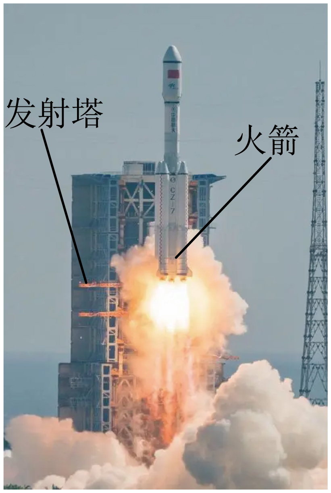
A. 以发射塔为参照物，火箭是静止的
B. 以火箭为参照物，发射塔是静止的
C. 以地面为参照物，火箭是运动
D. 以地面为参照物，发射塔是运动的
【答案】C
【解析】
【详解】A．以发射塔为参照物，火箭的位置发生了变化，火箭是运动的，故A错误；
B．以火箭为参照物，发射塔的位置发生了变化，发射塔是运动的，故B错误；
C．以地面为参照物，火箭的位置发生了变化，火箭是运动的，故C正确；
D．以地面为参照物，发射塔的位置没有发生了变化，发射塔是静止的，故D错误。
故选C。
4. 如图所示的光现象，由于光的折射形成的是（ ）
A. 故宫角楼在水中的“侧影”
B. 树在地面上“树影”
C. 花在透镜下的“放大像”
D. 月亮在水中的“像”
【答案】C
【解析】
【详解】A．水面相当于平面镜，故宫角楼在水中的“侧影”相当于平面镜成像，是由于光的反射形成的虚像，故A不符合题意；
B．光沿直线传播时遇到不透明的物体会在其后形成暗区，即影子。树在地面上的“树影”是光沿直线传播现象，故B不符合题意；
C．花朵用放大镜观察，观察到花朵放大的“虚像”属于凸透镜成像，是由光的折射形成的，故C符合题意；
D．水面相当于平面镜，月亮在水中的“像”属于平面镜成像，是光的反射形成的虚像，故D不符合题意。
故选C。
5. 如图所示，园艺工人在修剪枝条时，常把枝条尽量往剪刀的轴处靠近，这样做是为了（ ）
A. 增大动力臂，能够省力
B. 增大阻力臂，方便使用
C. 减小动力臂，方便使用
D. 减小阻力臂，能够省力
【答案】D
【解析】
【详解】常把枝条尽量往剪刀的轴处靠近，阻力臂减小了，阻力与阻力臂的乘积减小，动力臂不变，则动力减小，能够省力，故D符合题意，ABC不符合题意。
故选D。
6. 北京的鸽哨制作精致，图中所示的是用多个管状哨连接成的一个“连筒类”鸽哨。当鸽子携带鸽哨飞行时，哨声既有高音、也有低音，主要是因为各筒的长短会影响发出声音的（ ）
A. 音调B. 音色C. 响度D. 传播速度
【答案】A
【解析】
【详解】A．音调指的是声音的高低，与振动频率有关，各筒的长短不同，空气振动频率不同，音调不同，故A符合题意；
B．音色指的是声音的特色，与发生的材料和结构有关，与各筒的长短无关，故B不符合题意；
C．响度指的是声音的强弱，影响因素是振动的幅度，与各筒的长短无关，故C不符合题意；
D．传播速度与介质、温度有关，与各筒的长短无关，故D不符合题意。
故选A。
7. 如图所示，左手手指和右手手掌分别沿水平方向压在气球的两侧，使气球保持静止。下列说法正确的是（ ）
A. 手指对气球的压力大于手掌对气球的压力
B. 手指对气球的压强大于手掌对气球的压强
C. 手掌对气球的压力与气球对手掌的压力是一对平衡力
D. 手指与手掌受到气球的压力是一对相互作用力
【答案】B
【解析】
【详解】A．气球处于平衡状态，受平衡力的作用，在水平方向上，受到手指对它向右的压力和手掌对它向左的压力，气球处于平衡状态，说明这两个力是一对平衡力，因此手指对气球的压力等于手掌对气球的压力，故A错误；
B．因手指对气球的压力等于手掌对气球的压力，手指与气球的接触面积较小，由
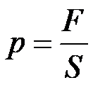
可知，手指对气球的压强大于手掌对气球的压强，故B正确；C．手掌对气球的压力与气球对手掌的压力大小相等、方向相反、作用在两个物体上、作用在同一直线上，是一对相互作用力，故C错误；
D．相互作用力是指两个物体之间相互之间的作用力，而手指和手掌都受到了气球对它们的力，不是手指和手掌两者之间的作用力，因此不是一对相互作用力。故D错误。
故选B。
8. 图甲为我国古代的“节能灯”——“省油灯”，图乙为其部分剖面示意图。向灯盏夹层内注水，有助于减慢油的蒸发，达到省油的目的。关于“省油灯”减慢油蒸发的方法，下列说法正确的是（ ）
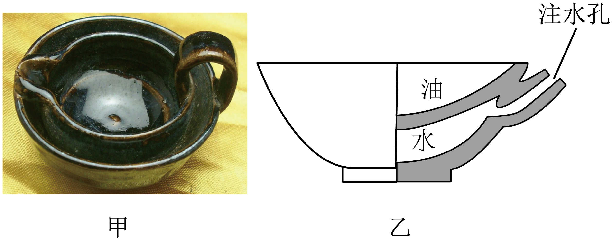
A. 降低油的温度B. 减小油的表面积
C. 减慢油表面上方的空气流动D. 减少油的体积
【答案】A
【解析】
【详解】减慢蒸发的方法包括降低液体温度、减慢液体表面空气流动速度和减小液体表面积。灯点燃后会加热灯盏，热量会通过热传递的方式转移给油，使油的内能增大，温度升高，加快油的蒸发，增加耗油量；如果在夹层中加水，因为水的比热容较大，可以吸收更多的热量，使油的温度升高得慢些，减慢了油的蒸发，所以相对耗油量就少一些。故A正确，BCD错误。
故选A。
9. 下列说法正确的是（ ）
A. 铁块很难被压缩，说明分子间只存 斥力
斥力
B. 燃料完全燃烧时放出的热量越多，其热值越大
C. 汽油机的做功冲程主要是将内能转化为机械能
D. 物体吸收热量，温度一定升高
【答案】C
【解析】
【详解】A．铁块很难被压缩，说明分子间存在斥力，引力和斥力是同时存在的，故A错误；
B．热值是燃料完全燃烧时放出的热量与质量之比，只与燃料的种类有关，质量未知，无法比较热值的大小，故B错误；
C．汽油机的做功冲程主要是高温高压燃气推动活塞做功，将内能转化为机械能，故C正确；
D．晶体熔化时，物体吸收热量，温度不变，故D错误。
故选C。
10. 某同学玩滑板车时的情境如图所示，一开始，人用力蹬地，人和滑板车一起向前运动；停止蹬地后，人和滑板车运动得越来越慢，最终停下来。下列说法正确的是（ ）
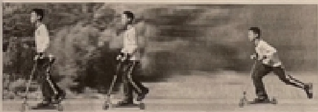
A. 人用力蹬地，使滑板车向前运动的过程中，人对滑板车没有做功
B. 人停止蹬地后，人和滑板车还能继续向前运动，是因为他们受到惯性的作用
C. 人停止蹬地后，人和滑板车继续向前运动的过程中，不再受到力的作用
D. 人停止蹬地后，人和滑板车运动得越来越慢的过程中，其运动状态发生改变
【答案】D
【解析】
【详解】A．人用力蹬地，滑板车向前运动的过程中，人的脚相对于滑板车有向后运动的趋势，人受到滑板车对人向前的静摩擦力，由于物体间力的作用是相互的，因此人对滑板车有向后的静摩擦力。在水平方向上人和滑板车一起运动了一段距离，由W=Fs可知，人对滑板车做功了。故A错误；
B．人停止蹬地后，人和滑板车还能继续向前运动，是因为他们具有惯性，但是惯性不是力，不能说受到惯性的作用。故B错误；
C．停止蹬地后，人和滑板车继续向前运动，由于地面是粗糙的，会到摩擦阻力的影响，整体会慢慢减速直到静止，因此仍然受到力的作用。故C错误；
D．运动状态指的是物体运动速度的大小和方向，人和滑板车运动得越来越慢的过程中，速度的大小在不断减小，因此运动状态发生了改变，故D正确。
故选D。
11. 在两个相同的烧杯中分别装有两种液体A、B，其质量 ；用额定电压相同的甲、乙两个电加热器分别加热液体A、B，电加热器的额定功率
；用额定电压相同的甲、乙两个电加热器分别加热液体A、B，电加热器的额定功率 ，它们均正常工作。液体A、B的温度随加热时间变化的关系如图所示。不考虑热量损失，下列说法正确的是（ ）
，它们均正常工作。液体A、B的温度随加热时间变化的关系如图所示。不考虑热量损失，下列说法正确的是（ ）
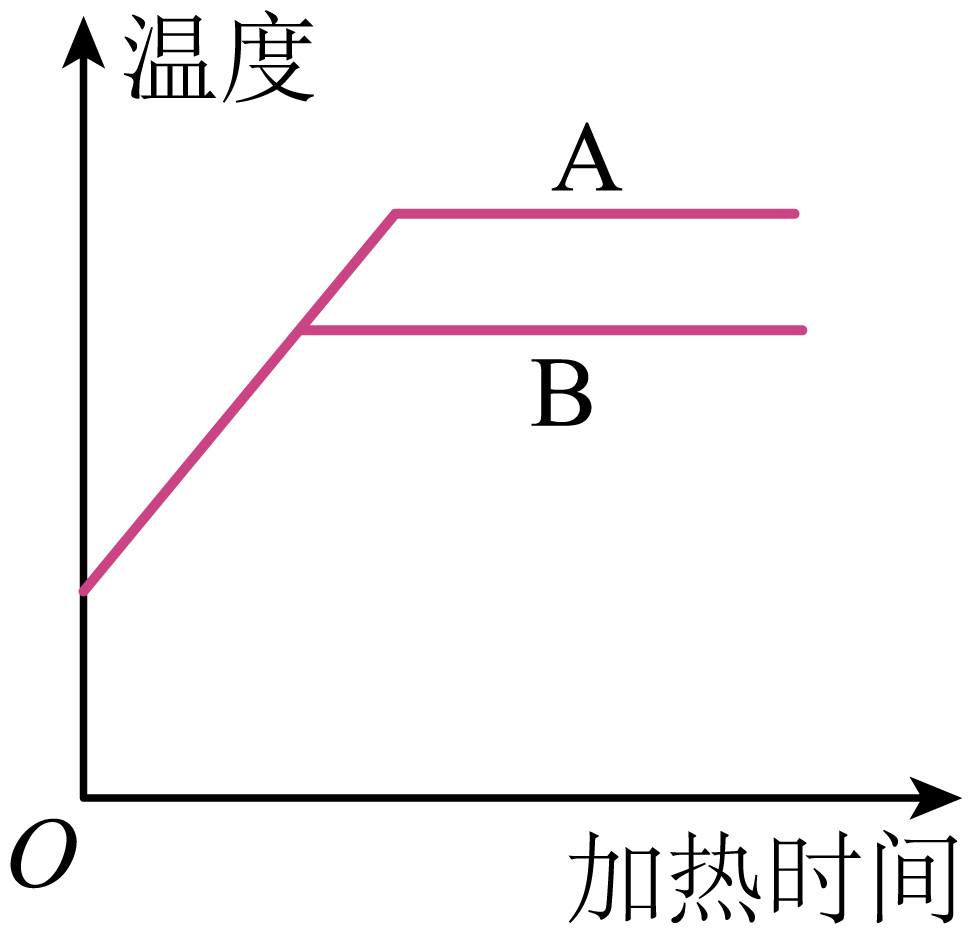
A. 液体A的沸点等于液体B的沸点
B. 电加热器甲的电阻丝阻值大于乙的电阻丝阻值
C. 相同时间内液体A吸收的热量等于液体B吸收的热量
D. 液体A的比热容大于液体B的比热容
【答案】D
【解析】
【详解】A．液体达到沸点时开始沸腾，沸腾时温度不变，继续吸热，由图可知，A的沸点大于B的沸点，故A错误；
B．由题意可知，两个加热器的额定电压相同，额定功率，由
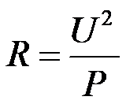
可知，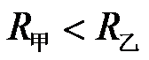
，即电加热器甲的电阻丝阻值小于乙的电阻丝阻值，故B错误；C．用额定电压相同的甲、乙两个电加热器分别加热液体A、B，因，加热相同的时间，由
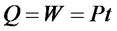
可知，相同时间内甲加热器释放的热量多，则相同时间内液体A吸收的热量大于液体B吸收的热量，故C错误；
D．由图像可知，AB均未沸腾前，加热相同的时间，温度升高的快慢相同，即
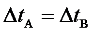
，但是由于，因此加热相同的时间，，由题意可知，则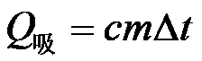
可知，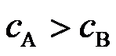
。故D正确。故选D。
12. 图甲为自动气象站中的测温装置，它的测温电路可简化为图乙，其中的“恒流源”是一个特殊电源，电流大小由电源内部结构决定，当电阻R变化时，通过R的电流大小保持不变。电阻R的阻值随温度的变化规律如图丙所示，通过数字电压表的示数可反映环境的温度。某次环境温度从20℃上升到30℃，电压表的示数变化了8mV。当温度的变化值相同时，电压表示数的变化值越大，该测温装置的灵敏度越高。下列说法正确的是（ ）
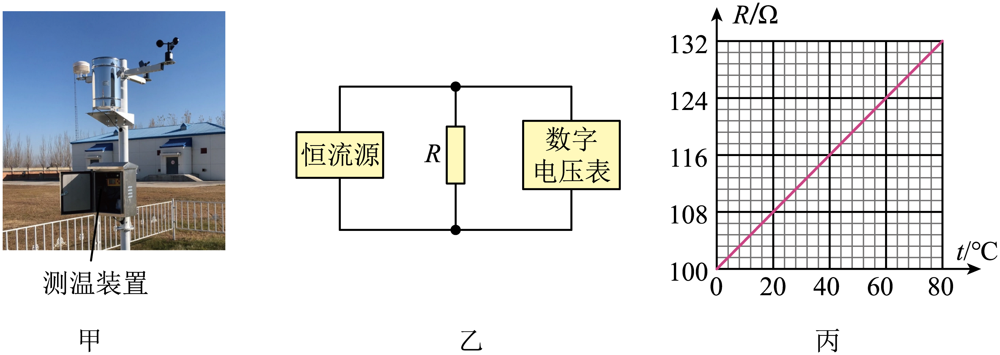
A. 每升高1℃，R的阻值增大1.65Ω
B. 通过R的电流为20mA
C. 环境温度为20℃时，电压表的示数为216mV
D. 若要增大该测温装置的灵敏度，可换一个电流值更小的恒流源
【答案】C
【解析】
【详解】A．由图丙可知，温度升高20℃，电阻增大8Ω，则每升高1℃，R的阻值增大
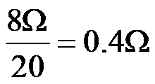
故A错误；
BC．由图丙可知，当
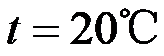
时，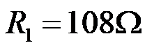
，由欧姆定律可知，通过R的电流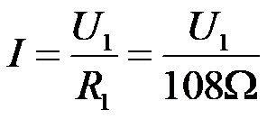
当
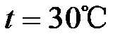
时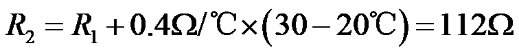
则通过R的电流为
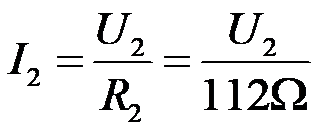
由题意可知，当电阻R变化时，通过R的电流大小保持不变，环境温度从20℃上升到30℃，电阻变大，由可知，电压表的示数会增大，因电压表的示数变化了8mV，即
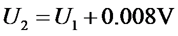
因电流不变，则
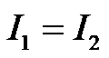
，即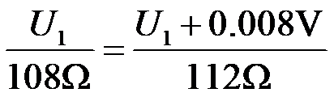
解得
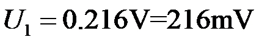
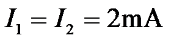
故B错误，C正确；
D．由可知，阻值变化量相同时，电流越大，电压表示数变化值越大，因此若要增大该测温装置的灵敏度，可换一个电流值更大的恒流源。故D错误。
故选C。
二、多项选择题（下列每题均有四个选项，其中符合题意的选项均多于一个。共6分，每题2分。每题选项全选对的得2分，选对但不全的得1分，有错选的不得分）
13. 如图所示是我国西部某熔盐塔式光热电站，上万面镜子将太阳光准确地反射到高塔顶端，太阳光的能量被塔顶的熔盐吸收，熔盐带着这些能量到达厂房，将水加热成水蒸气，水蒸气推动汽轮发电机发电。下列说法正确的是（ ）
A. 塔式光热发电站是将太阳能直接转化为电能
B. 塔顶的熔盐吸收太阳光的能量，内能增大
C. 汽轮发电机发电是电磁感应现象的应用
D. 不同位置的镜子将太阳光反射到塔顶都遵循光的反射定律
【答案】BCD
【解析】
【详解】A．塔式光热发电站是将太阳能转化为水蒸气的内能，内能转化为机械能，最后转化为电能，故A错误；
B．塔顶的熔盐吸收太阳光的能量，通过热传递的方式增大内能，故B正确；
C．汽轮发电机发电是电磁感应现象的应用，是闭合电路的部分导体切割磁感线产生感应电流，故C正确；
D．不同位置的镜子，是平面镜，将太阳光反射到塔顶，是光的反射，遵循光的反射定律，故D正确。
故选BCD。
14. 用某滑轮组提升重物时，绳子自由端拉力做功随时间变化的关系如图所示，在20s内绳子自由端竖直匀速移动16m，重物竖直匀速上升4m。已知动滑轮总重100N，提升的物体重800N。关于该过程，下列说法正确的是（ ）
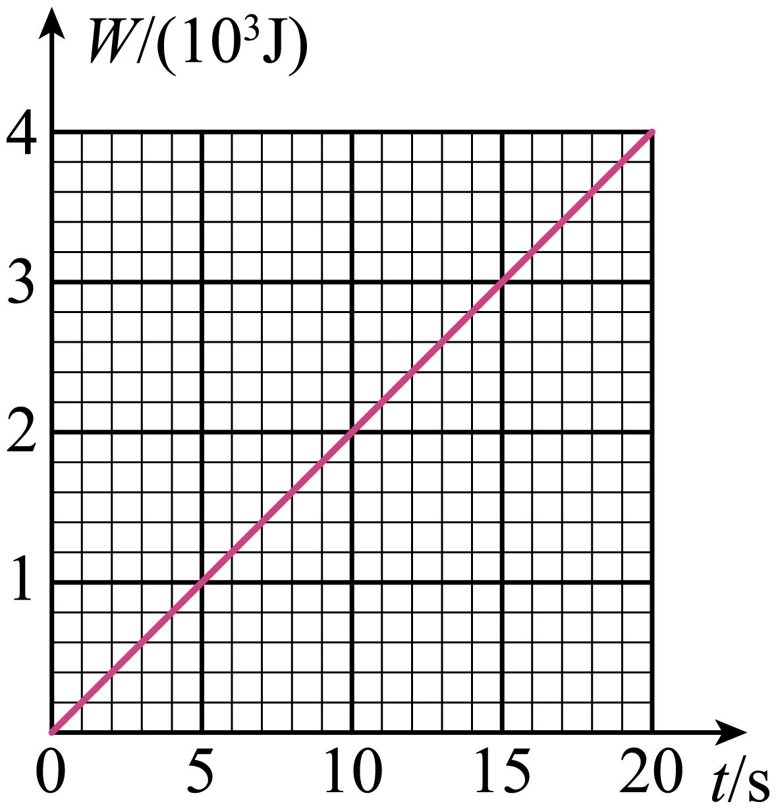
A. 绳子自由端拉力的功率为200W
B. 额外功为400J
C. 绳子自由端拉力的大小为250N
D. 滑轮组的机械效率约为88.9%
【答案】AC
【解析】
【详解】A．由图像可知，当时间为20s时，拉力做功为
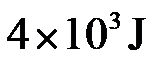
，则绳子自由端拉力的功率为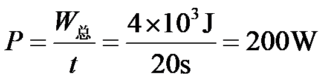
故A正确；
B．有用功
额外功
故B错误；
C．由
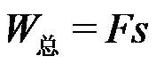
可得，绳子自由端拉力的大小为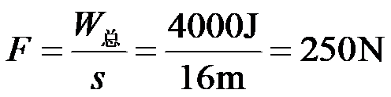
故C正确；
D．滑轮组的机械效率约为
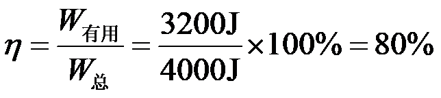
故D错误。
故选AC。
15. 图甲为一彩球“温度计”，其密闭玻璃容器内装有一种特殊液体，随着温度升高，这种液体的密度会减小。液体中有5个挂有温度标牌的彩球，彩球体积（包括标牌）相等，其热胀冷缩可以忽略。当有彩球悬浮时，悬浮的彩球标牌上的温度值就是所测得的当前环境温度。图乙为这个温度计的示意图，编号为4的彩球标牌所标温度值为22℃，相邻编号的彩球标牌上的温度值间隔为2℃。下列说法正确的是（ ）
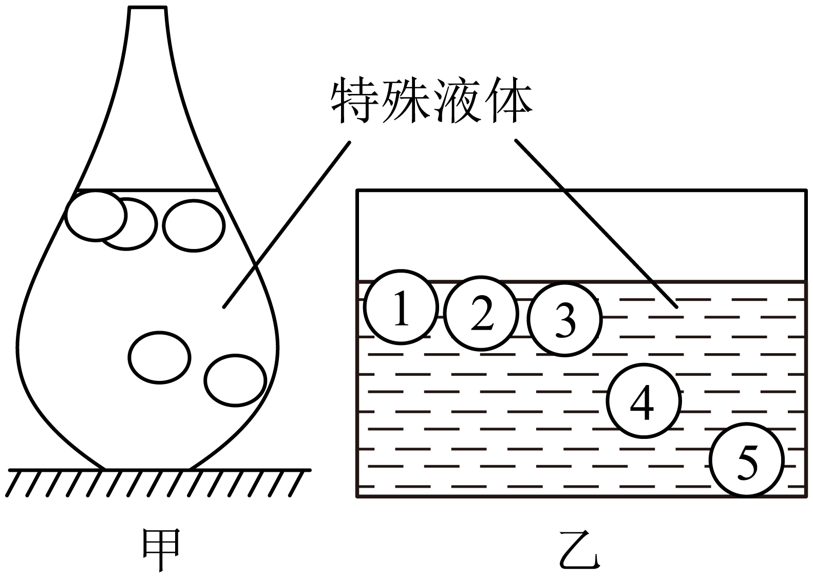
A. 彩球4在22℃时所受浮力大于18℃时所受浮力
B. 当环境温度处于该温度计可测得的最低温度时，5个彩球均漂浮
C. 若有2个彩球漂浮，3个彩球沉底，则环境温度t满足24℃<t<26℃
D. 要增大该温度计能测得的最高温度，可增加一个与彩球1体积相等、质量更小的彩球
【答案】BCD
【解析】
【详解】当温度升高时，液体的密度变小，原来悬浮的小球因为浮力变小，而沉底，彩球4号表示环境温度为22℃，彩球5号比4号相比沉底，说明彩球5号密度是液体的密度，表示环境温度为20℃，彩球5号可以悬浮，那么彩球3号表示环境温度24℃，彩球2号表示环境温度为26℃，彩球1号表示28℃；
A．彩球4在22℃时悬浮，彩球4的密度等于液体的密度，浮力等于重力，在18℃时，温度低，液体的密度比较大，彩球4号处于漂浮状态，浮力等于重力，彩球所受的浮力相同，故A错误；
B．当环境温度处于该温度计可测得的最低温度时，特殊液体的密度最大， 5个彩球均漂浮，故B正确；
C．若有2个彩球漂浮，则彩球1、2号漂浮，说明最高温度小于26℃，3个彩球沉底，彩球3、4、5号沉底，说明最低温度不低于24℃，故环境温度t满足
24℃<t<26℃
故C正确；
D．要增大该温度计能测得的最高温度，此时说明彩球内的液体密度最小，最后悬浮，故需要找一个密度小的彩球，可增加一个与彩球1体积相等、质量更小的彩球，最后悬浮，故D正确。
故选BCD。
第二部分
三、实验探究题（共28分，16、20、23题各3分，17、18、19题各4分，21题2分，22题5分）
16. 如图所示为一个水滴下落过程的示意图，水滴由A位置下落到B位置，A、B之间的距离为________cm，所用的时间为0.2s，依据公式
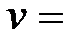
________可计算出这个过程中水滴下落的平均速度为________cm/s。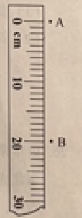
【答案】 ①. 20.0 ②. ③. 100
【解析】
【详解】[1]由图可知，刻度尺的10cm之间有10小格，分度值为1cm，读数时估读到分度值的下一位。A点与零刻度线对齐，B点与20.0cm对齐，因此A、B之间的距离为20.0cm。
[2][3]由
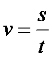
可得这个过程中水滴下落的平均速度为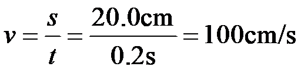
17. （1）在探究水沸腾前后温度变化特点时，某同学观察到如图甲、乙所示的实验现象，图________（选填“甲”或“乙”）是水沸腾时气泡上升过程大小变化的情况；
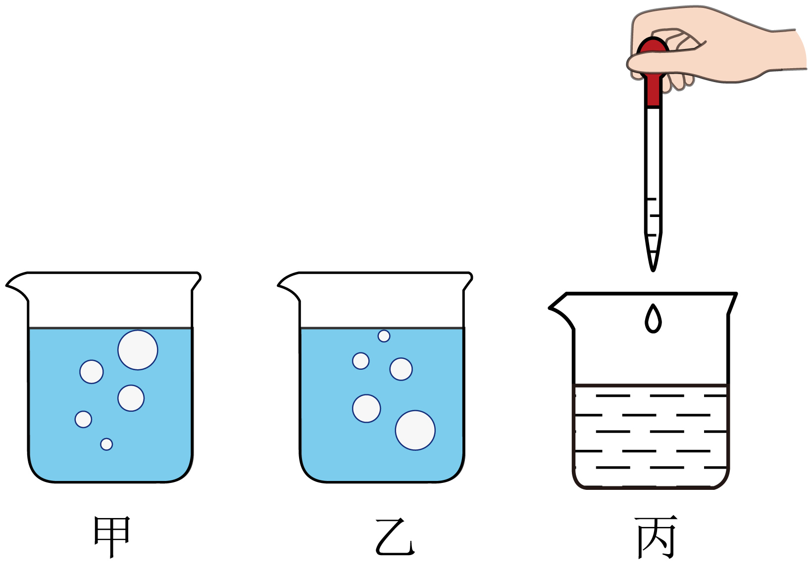
（2）如图丙所示，某同学用滴管向一个装有水的烧杯中滴入一滴红墨水，一段时间后，可以看到：________，这属于扩散现象。
【答案】 ①. 甲 ②. 一整杯水都变红了
【解析】
【详解】（1）[1]沸腾前烧杯底部温度高，表面温度低，底部的水先汽化形成气泡，气泡上升的过程中，遇冷液化，气泡越变越小，是乙图，沸腾时，整杯水的温度一致，底部的水先汽化，气泡慢慢上升过程中，周围的水汽化，气泡越变越大，故选甲图。
（2）[2]某同学用滴管向一个装有水的烧杯中滴入一滴红墨水，一段时间后，水分子、墨水分子都在运动，可以看到一整杯水都变红了。
18. （1）为了探究导体在磁场中运动时产生感应电流的条件，在如图甲所示的实验装置中，还需在导线夹a、b间接入的电路元件是________；
（2）某同学用图乙所示的装置探究通电螺线管外部磁场的方向与螺线管中电流的方向是否有关，闭合开关，标出通电螺线管中电流的方向、小磁针静止时N极的指向；仅将电源正负极对调后连入电路，如图丙所示，闭合开关，标出通电螺线管中电流的方向、小磁针静止时N极的指向。小磁针涂黑的一端是N极，依据图乙、丙所示的现象可以得出的结论是：________。
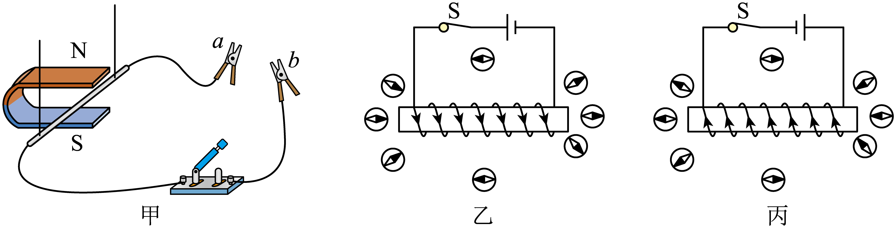
【答案】 ①. 灵敏电流计 ②. 通电螺线管外部磁场的方向与螺线管中电流的方向有关
【解析】
【详解】[1]为了探究导体在磁场中运动时产生感应电流的条件，需要灵敏电流计反应电流的方向和电流的大小，故需要在导线夹a、b间接入灵敏电流计。
[2]根据乙丙对比，发现螺线管中电流的方向发生了变化，通电螺线管外部磁场的方向发生变化，故结论为通电螺线管外部磁场的方向与螺线管中电流的方向有关。
19. 利用两端电压不变的电源、两个电流表、两个不同规格的小灯泡、滑动变阻器、开关和导线若干，探究在串联电路中，流入第二个灯泡的电流
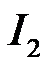
与流入第一个灯泡的电流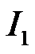
是否相等。（1）画出实验电路图________；
（2）画出实验数据记录表格________。
【答案】（1）
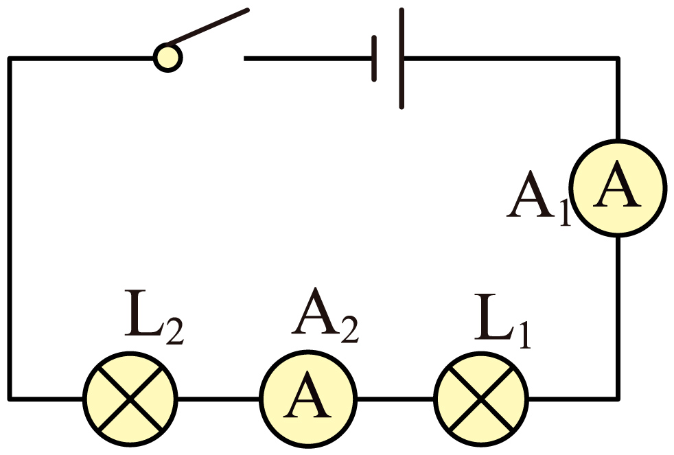
（2）实验次数 | 电流表A1的示数/A | 电流表A2的示数/A |
1 |
|
|
2 |
|
|
3 |
|
|
【解析】
【小问1详解】
探究在串联电路中，则需要连接成串联电路，流入第二个灯泡的电流与流入第一个灯泡的电流是否相等，两个电流表，一个需要在第一个灯泡前，测量流入第一个灯泡的电流，靠近电源的正极，第二个电流表需要在第二个灯泡前，测量流入第二个灯泡，即两个灯泡之间，故电路图如下图所示：
【小问2详解】
需要记录的物理量有A1的示数，A2的示数，一共需要三组实验，寻找普遍规律，故表格为：
实验次数 | 电流表A1的示数/A | 电流表A2的示数/A |
1 |
|
|
2 |
|
|
3 |
|
|
20. 某同学利用如图所示的装置及完全相同的电子蜡烛A、B等器材，探究物体在平面镜中成像时像距与物距是否有关。其中薄透明玻璃板与水平纸面垂直。主要实验步骤如下：
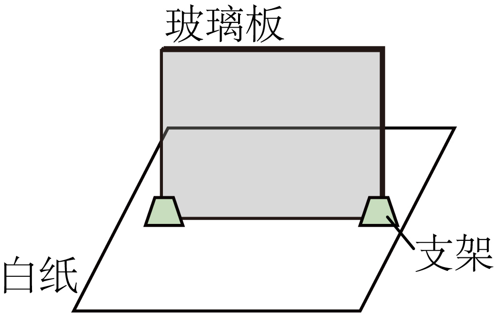
（1）将点亮的A放在玻璃板前，用刻度尺测量________；将未点亮的B放在玻璃板后，不断调整B的位置，直到从各个角度观察B与A的像________，用刻度尺测量B到玻璃板的距离。将实验数据记录在表格中；
（2）改变________，仿照步骤（1）再做1次实验，将实验数据记录在表格中。
【答案】（1） ①. A到玻璃板的距离 ②. 完全重合
（2）A的位置
【解析】
【小问1详解】
[1]探究物体在平面镜中成像时像距与物距是否有关，需要测量蜡烛A到玻璃板的距离，用刻度尺测量B到玻璃板的距离。
[2]将未点亮的B放在玻璃板后，不断调整B的位置，直到从各个角度观察B与A的像完全重合，此时物体B可以替代蜡烛A的像。
【小问2详解】
改变蜡烛A的位置，仿照步骤（1）再做1次实验，将实验数据记录在表格中，需要多次实验，寻找普遍规律。
21. 在探究影响滑动摩擦力大小的因素时，某同学在水平桌面上完成了如图所示的实验。
（1）该同学用弹簧测力计水平拉动木块。应使木块沿水平桌面做________直线运动，才能用弹簧测力计的示数表示木块所受滑动摩擦力的大小；
（2）甲、乙所示的两次实验探究的问题是：滑动摩擦力大小与________是否有关。
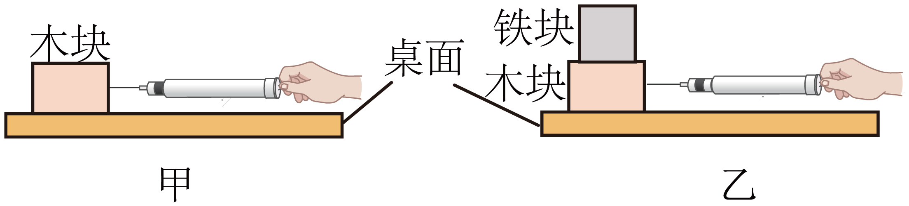
【答案】（1）匀速 （2）压力大小
【解析】
【小问1详解】
应使木块沿水平桌面做匀速直线运动，木块处于平衡态，拉力与摩擦力才是平衡力，拉力的大小等于摩擦力的大小。
 小问2详解】
小问2详解】
如图所示，接触面的粗糙程度相同，压力的大小不同，故探究的是滑动摩擦力大小与压力大小的关系。
22. 某同学进行了如下实验：
（1）用图甲所示的电路测量额定电压为2.5V的小灯泡
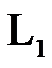
的额定功率，电源两端电压保持不变；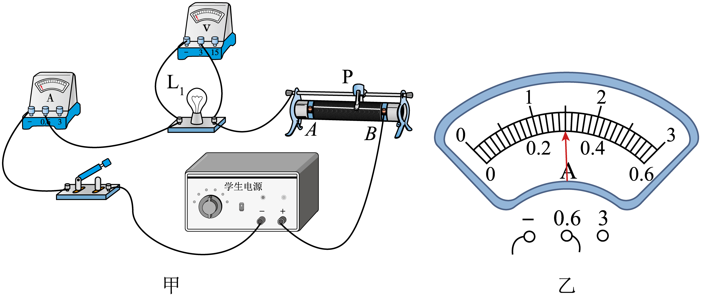
①闭合开关前，滑动变阻器的滑片P应放置在________端；
②闭合开关，应________以确定小灯泡正常发光，此时电流表示数如图乙所示，则的额定功率
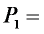
________W。（2）该同学想比较另一个额定电压为2.5V的小灯泡
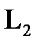
的额定功率与的大小关系，他断开开关，保持滑动变阻器滑片位置不变，将替换为，闭合开关后，发现电压表示数为2.3V。依据上述现象，可推断出________（选填“>”“=”或“<”），他继续完成了的测量后，验证了推断。【答案】（1） ①. A ②. 移动滑动变阻器滑片，使电压表示数为2.5V ③. 0.75
（2）<
【解析】
【小问1详解】
①[1]为了保护电路，开关闭合前，滑动变阻器的滑片必须位于阻值最大处，故滑片需要位于A端。
②[2]L1的额定电压为2.5V，为了使灯泡正常发光，闭合开关后，应移动滑动变阻器滑片，使电压表示数为2.5V。
[3]由图乙可知，电流表使用的小量程，分度值为0.02A，示数为0.3A，因此L1的额定功率为
【小问2详解】
保持滑动变阻器滑片位置不变，将替换为，闭合开关后，发现电压表示数为2.3V。由串联电路电压特点可知，滑动变阻器两端电压增大，而滑动变阻器接入电路的阻值不变，由 可知，电路中电流增大，总电阻减小，因
可知，电路中电流增大，总电阻减小，因
因此，由可知，灯泡正常发光时，。
23. 某同学将粗细均匀的吸管一端密封，在吸管内装上适量的铁砂，并在吸管上标上刻度线及相应的密度值，制成了简易密度计，如图所示。密度计上有密度值为和的两条刻度线（），两刻度线之间的距离为，该同学发现很小。若想增大，分析说明应增加还是减少吸管内铁砂的质量。
【答案】见解析
【解析】
【详解】密度计在使用时处于漂浮状态，由物体浮沉条件可知，密度计受到的浮力等于总重力，即，即
则
，
因，则
若增大，则应增大G总或减小S，因此应增大吸管内铁砂的质量，从而增大总重力。
四、科普阅读题
24. 请阅读《宇宙灯塔——脉冲星》并回答问题。
宇宙灯塔——脉冲星
截至2024年5月，有“中国天眼”之称的500m口径球面射电望远镜（FAST）发现的新脉冲星数量突破900颗，这些发现，极大拓展了人类观察宇宙视野的极限。
“中国天眼”紧盯的脉冲星是什么？脉冲星是一类高速自转的天体，具有极强的磁场，它高速自转时就在两磁极处形成了方向性很强的锥形电磁波束（如图甲所示）。由于两个电磁波束会随着脉冲星的高速自转而一起转动，它们就会像灯塔发出的两束光一样扫过宇宙空间。电磁波束每扫过地球上的射电望远镜一次，射电望远镜就会收到一个脉冲信号（如图乙所示），脉冲星便以此而得名。
脉冲星具有极其稳定的自转周期（自转一圈所用的时间），部分脉冲星的自转周期约3亿年仅变化0.1ms，因此可将脉冲星作为计时基准。
脉冲星还是宇宙中的“探针”，可应用于探测引力波。宇宙中的超大质量天体加速运动时，会产生引力波。引力波信号极其微弱，特别是纳赫兹（ Hz）引力波，难以直接观测。但是，引力波会使我们收到的脉冲星的脉冲信号发生变化。我国科学家通过综合分析多个脉冲星脉冲信号的变化，于2023年6月找到了纳赫兹引力波存在的关键证据。
Hz）引力波，难以直接观测。但是，引力波会使我们收到的脉冲星的脉冲信号发生变化。我国科学家通过综合分析多个脉冲星脉冲信号的变化，于2023年6月找到了纳赫兹引力波存在的关键证据。
越来越多被发现的脉冲星，犹如宇宙中不断被点亮的灯塔，引领我们揭开更多暗藏在宇宙中的秘密。
请根据上述材料，回答下列问题：
（1）电磁波束每扫过射电望远镜一次，射电望远镜就会收到一个________，脉冲星便以此而得名；
（2）脉冲星能够作为计时基准是因为它具有________；
（3）科学家找到纳赫兹引力波存在的关键证据的研究方法在初中物理的学习过程中也用到过，请类比研究条形磁体周围磁场分布的方法，补全表格中①②的内容_________；
研究对象 | 条形磁体的磁场 | 纳赫兹引力波 |
观测“设备” | 人眼 | 中国天眼 |
探测工具 | 铁屑 | ① |
可观测证据 | 铁屑有规则地排列 | ② |
推理得到的结论 | 条形磁体周圆的磁场有规律分布 | 纳赫兹引力波存在 |
【答案】（1）脉冲信号
（2）脉冲星具有极其稳定的自转周期
（3）脉冲星，收到的脉冲星的脉冲信号发生变化
【解析】
【小问1详解】
根据题文可知，电磁波束每扫过地球上的射电望远镜一次，射电望远镜就会收到一个脉冲信号。
【小问2详解】
由题文可知，脉冲星具有极其稳定的自转周期（自转一圈所用的时间），部分脉冲星的自转周期约3亿年仅变化0.1ms，因此可将脉冲星作为计时基准。
【小问3详解】
根据题文可知，脉冲星还是宇宙中的“探针”，可应用于探测引力波，类比铁屑研究磁场的分布；收到的脉冲星的脉冲信号发生变化，从而找到了纳赫兹引力波存在的关键证据。
五、计算题（共8分。25、26题各4分）
25. 如图所示的是某款两档电热器的简化电路，、为阻值一定的电热丝，，。该电热器接入电压为220V的电路中。求：
（1）低温档时电路中的电流________；
（2）高温档时电热器的电功率________。
【答案】（1）0.4A
（2）1188W
【解析】
【小问1详解】
根据可知，当总电阻越小，总功率越大，当两个电阻并联时，为高温档，当闭合S1时，为低温档时，只有R1工作，故电路中的电流
【小问2详解】
当两个电阻并联时，为高温档，通过电阻R2的电流为
则干路电流为
高温档时电热器的电功率
26. 近年来在东北林区发现了越来越多野生东北虎的足迹。生物学家为了估算某只野生东北虎的质量，在松软、平坦且足够深的雪地上，选取该东北虎四脚着地停留时的脚印，其中的一个脚印如图甲所示。在方格纸上描绘出脚印的轮廓，如图乙所示，图中每个小方格的面积均为，数出脚印轮廓所围小方格的个数（凡大于半格的都算一个格，小于半格的都不算），用数出的小方格的个数乘以一个小方格的面积，就大致得出了脚印的面积。测出脚印的深度，在脚印旁边相同的雪地上放一底面积为的平底容器，在容器中缓缓放入适当的物体，当容器下陷的深度与脚印的深度相同时，测出容器及内部物体的总质量为30kg。忽略脚趾和脚掌之间空隙的面积，g取10N/kg，求：
（1）该东北虎一只脚印的面积________；
（2）该东北虎的质量________。
【答案】（1）135cm2
（2）162kg
【解析】
【小问1详解】
由图乙可知，脚印占用的小方格的数量为15，因此该东北虎一只脚印的面积约为
【小问2详解】
容器及内部物体的总质量为30kg时，平底容器对地面的压力为
平底容器对地面的压强为
当容器下陷的深度与脚印的深度相同，则东北虎对地面的压强与容器对地面的压强相等，则东北虎对地面的压力即重力为
该东北虎质量